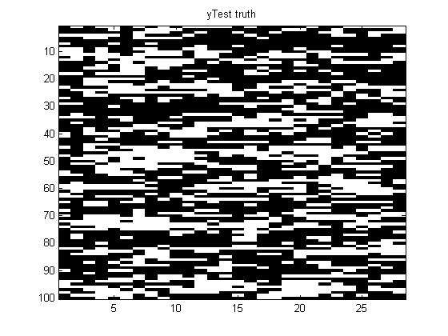
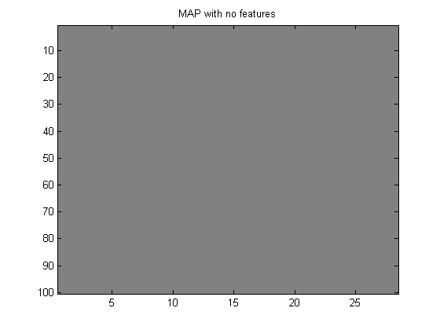
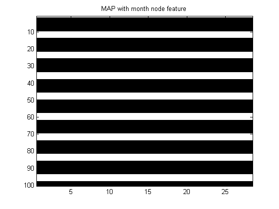
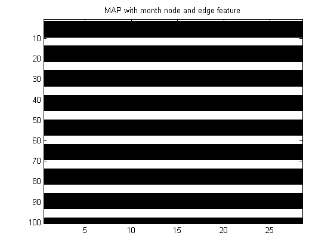
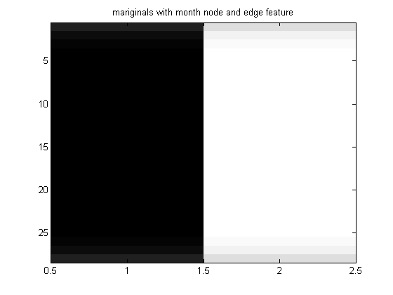
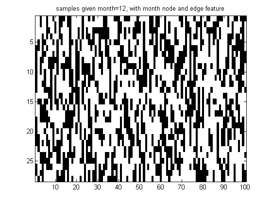
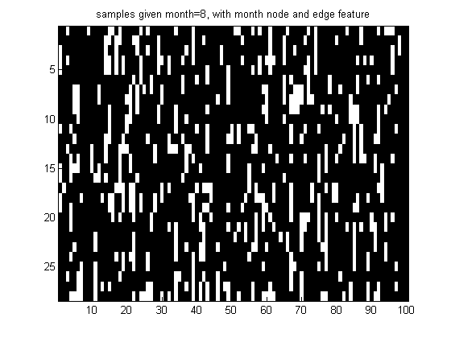

Contents
Demonstrate training a chain-structured CRF
Based on http://www.cs.ubc.ca/~schmidtm/Software/UGM/trainCRF.html
% This file is from pmtk3.googlecode.com
Get data
setSeed(0); load rain.mat % X is 1059*28 y = X+1; % Convert from {0,1} to {1,2} representation [nInstances,nNodes] = size(y); % test using a subset of the training set Ntest = 100; yTest = y(1:Ntest, :); figure; imagesc(yTest); title('yTest truth'); colormap(gray);
Create chain model
nNodes = size(y,2); adj = chainAdjMatrix(nNodes); nStates = 2*ones(1,nNodes); model = crf2Create(adj, nStates, 'method', 'Chain'); nEdges = model.nEdges;
No features
Xnode = ones(nInstances,1,nNodes);
Xedge = ones(nInstances,1,nEdges);
model = crf2Train(model, Xnode, Xedge, y);
yhat = crf2Map(model, Xnode(1:Ntest,:,:), Xedge(1:Ntest,:,:));
figure; imagesc(yhat);
title('MAP with no features'); colormap(gray);
 month is added as node features
nFeatures = 12; Xnode = zeros(nInstances,nFeatures,nNodes); for m = 1:nFeatures Xnode(months==m,m,:) = 1; end Xnode = [ones(nInstances,1,nNodes) Xnode]; model = crf2Train(model, Xnode, Xedge, y); yhat = crf2Map(model, Xnode(1:Ntest,:,:), Xedge(1:Ntest,:,:)); figure; imagesc(yhat); title('MAP with month node feature'); colormap(gray);
Month is added as edge feature
sharedFeatures = 1:13; Xedge = UGM_makeEdgeFeatures(Xnode, model.edgeStruct.edgeEnds, sharedFeatures); model = crf2Train(model, Xnode, Xedge, y, 'lambdaEdge', 0, 'lambdaNode', 0); yhat = crf2Map(model, Xnode(1:Ntest,:,:), Xedge(1:Ntest,:,:)); figure; imagesc(yhat); title('MAP with month node and edge feature'); colormap(gray); nodeBel = crf2InferNodesAndEdges(model, Xnode(1:Ntest,:,:), Xedge(1:Ntest,:,:)); figure; imagesc(nodeBel(:,:,1)); title('mariginals with month node and edge feature'); colormap(gray); % Sample from a case for specific months mths = [12, 8]; % December, August for jj=1:length(mths) mth = mths(jj); ndx = find(months==mth); ndx = ndx(1); samples = crf2Sample(model, squeeze(Xnode(ndx,:,:)), squeeze(Xedge(ndx,:,:)), 100); figure; imagesc(samples);colormap(gray); title(sprintf('samples given month=%d, with month node and edge feature', mth)); end   